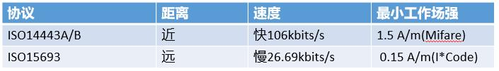

概要¶
测试部提出指纹解锁慢,需要1.366s,大于要求的500ms
直观体验¶
感觉大概需要1s左右,主要是屏幕亮起,有一个黑色的背光,好像是动画还是什么问题. 在设置界面,锁屏,更加明显
log¶
可以看到,指纹从中断出来,16:27:57.808,到通知系统解锁notifyCallback, 16:27:57.995, 大概只有187ms,还是比较快的.
log也对应得上, AUTHENTICATION in TA consumed time 19/164//184 ms
行 101: 08-05 16:27:57.808 0 0 I fortsense-fsfp_ctl-245: fsfp_ctl_device_irq(irq = 195, ..) toggled.
行 101: 08-05 16:27:57.808 0 0 I fortsense-fsfp_ctl-245: fsfp_ctl_device_irq(irq = 195, ..) toggled.
行 102: 08-05 16:27:57.808 0 0 I fortsense-fsfp_ctl-237: fsfp_ctl_device_event(..) enter.
行 102: 08-05 16:27:57.808 0 0 I fortsense-fsfp_ctl-237: fsfp_ctl_device_event(..) enter.
行 103: 08-05 16:27:57.810 916 979 I 916 979 [fsfp-hal-device] : (847) got device falling edge interrupt, signal the semaphore.
行 104: 08-05 16:27:57.810 916 1405 I 916 1405 [fsfp-hal-v1.4.0.10] : (2475) got the device interrupt. 0
行 105: 08-05 16:27:57.829 916 1405 I 916 1405 [fsfp-client-qs] : (316) ---8<---- TA LOG BEGINS ---------
行 106: 08-05 16:27:57.829 916 1405 I 916 1405 [fsfp-ic] : (6977) ifgr_cur.sum: 124+14//128+17/128+15/128+17/136+14/117+15/116+17/117+17/123+6, 12/4/5, 122/122/32/0/0, 67/63
行 107: 08-05 16:27:57.829 916 1405 I 916 1405 [fsfp-tee-v1.4.0.10] : (2549) 'sf_interrupt_query' leave, time: 1ms, query int status: opstate SF_OPERATION_STATE_AUTH, device SF_DEVICE_STAT_WAITING_IMAGE, irq SF_DEVICE_STAT_IMAGE_READY
行 108: 08-05 16:27:57.829 916 1405 I 916 1405 [fsfp-client-qs] : (333) --------- TA LOG FINISH ---->8---
行 109: 08-05 16:27:57.829 916 1405 I 916 1405 [fsfp-hal-v1.4.0.10] : (3392) (1344) 'notifyCallback' enter, msg type: 1 acquired_info = 0
行 111: 08-05 16:27:57.830 916 1405 I 916 1405 [fsfp-hal-v1.4.0.10] : (3392) (1344) 'notifyCallback' enter, msg type: 1 acquired_info = 1002
行 117: 08-05 16:27:57.994 916 1405 I 916 1405 [fsfp-client-qs] : (316) ---8<---- TA LOG BEGINS ---------
行 118: 08-05 16:27:57.994 916 1405 I 916 1405 [fsfp-ic] : (3842) 'ic_get_finger_status' finger: touch
行 119: 08-05 16:27:57.994 916 1405 I 916 1405 [fsfp-tee-v1.4.0.10] : (806) 'do_read_multi_sensor_data_check' consumed time 19//9/0/8//17 ms, check valid: 0/0/0/0/SF_FINGER_TOUCH//Y
行 120: 08-05 16:27:57.994 916 1405 I 916 1405 [fsfp-algo] : (516) retry0 api_algo_get_fingerquality(0x36a60d1c) = 60. erea 96
行 121: 08-05 16:27:57.994 916 1405 I 916 1405 [fsfp-algo] : (530) retry0 api_algo_fingerfeature_handle(..) consumed time 95 ms.
行 122: 08-05 16:27:57.994 916 1405 I 916 1405 [fsfp-algo] : (1044) api_algo_vertify_feature, alg_ver: 2048506_2108230, idx = 0/1, fid = 363990709, score = 54, study = 1/1, enroll_frame: 16/ 5
行 123: 08-05 16:27:57.994 916 1405 I 916 1405 [fsfp-algo] : (1121) retry0 api_algo_vertify_feature totally consumed time ( 34 + 0) = 34 ms.
行 124: 08-05 16:27:57.994 916 1405 I 916 1405 [fsfp-tee-v1.4.0.10] : (997) retry0 do_authenticate: score = 54, fid = 363990709, study = 1(Y), authenticate total time: 146 ms.
行 125: 08-05 16:27:57.994 916 1405 I 916 1405 [fsfp-tee-v1.4.0.10] : (2655) 'sf_interrupt_process' leave, time: 148ms, err = 0
行 126: 08-05 16:27:57.994 916 1405 I 916 1405 [fsfp-client-qs] : (333) --------- TA LOG FINISH ---->8---
行 127: 08-05 16:27:57.994 916 1405 I 916 1405 [fsfp-hal-v1.4.0.10] : (2720) AUTHENTICATION in TA consumed time 19/164//184 ms.
行 128: 08-05 16:27:57.994 916 1405 I 916 1405 [fsfp-hal-v1.4.0.10] : (3392) (1459) 'notifyCallback' enter, msg type: 1 acquired_info = 0
行 130: 08-05 16:27:57.995 916 1405 I 916 1405 [fsfp-hal-v1.4.0.10] : (3408) (1463) 'notifyCallback' enter, msg type: 5 gid = 0 fid = 363990709(363990709)
流程¶
从指纹中断,到亮屏,总共花费,1118 ms,时间还是比较多的
时间 |
耗时 |
动作 |
log |
|---|---|---|---|
16:27:57.808 |
接收指纹中断 |
fsfp_ctl_device_irq |
|
16:27:57.995 |
187ms |
指纹匹配成功,通知解锁 |
notifyCallback |
16:27:58.044 |
49ms |
系统开始唤醒并且解锁 |
startWakeAndUnlock |
16:27:58.050 |
6ms |
开始draw |
Blocking screen on until initial contents have been drawn. |
16:27:58.051 |
1ms |
通知亮屏 |
notifyScreenOn |
16:27:58.310 |
259ms |
开始亮屏 |
handleNotifyScreenTurningOn |
16:27:58.540 |
230ms |
开始唤醒 |
handleNotifyWakingUp |
16:27:58.926 |
386ms |
亮屏成功 |
Screen on took 881 ms |
16:27:57.808 0 0 I fortsense-fsfp_ctl-245: fsfp_ctl_device_irq(irq = 195, ..) toggled.
16:27:57.995 916 1405 I 916 1405 [fsfp-hal-v1.4.0.10] : (3408) (1463) ‘notifyCallback’ enter, msg type: 5 gid = 0 fid = 363990709(363990709)
16:27:58.044 2039 2039 V BiometricUnlockCtrl: startWakeAndUnlock(1)
16:27:58.050 1589 1805 I DisplayPowerController[0]: Blocking screen on until initial contents have been drawn.
16:27:58.051 2039 5636 D KeyguardViewMediator: notifyScreenOn
16:27:58.310 2039 2039 D KeyguardViewMediator: handleNotifyScreenTurningOn
16:27:58.320 2039 2039 D KeyguardViewMediator: keyguardGoingAway
16:27:58.382 0 0 I ILITEK : (drm_notifier_callback, 483): resume: event = 1, TP_RESUME
tp resume看起来花了40ms,
08-05 16:27:58.382 0 0 I ILITEK : (drm_notifier_callback, 477): DRM event:1,blank:0
08-05 16:27:58.382 0 0 I ILITEK : (drm_notifier_callback, 483): resume: event = 1, TP_RESUME
08-05 16:27:58.382 0 0 I ILITEK : (ili_sleep_handler, 539): Sleep Mode = 2
08-05 16:27:58.382 0 0 I ILITEK : (ili_sleep_handler, 595): TP resume start
08-05 16:27:58.382 0 0 I ILITEK : (ili_reset_ctrl, 1036): TP HW RST
08-05 16:27:58.382 0 0 I ILITEK : (ili_tp_reset, 37): edge delay = 40
08-05 16:27:58.428 0 0 I ILITEK : (ili_set_tp_data_len, 826): TP mode = 0, format = 0, len = 43
08-05 16:27:58.428 0 0 I ILITEK : (ili_sleep_handler, 619): TP resume end
08-05 16:27:58.428 0 0 I ILITEK : (ili_irq_enable, 269): Enable irq success
08-05 16:27:58.428 0 0 E [pax_authinfo]: gpio_sleep_sp, en=0
16:27:58.540 2039 2039 D KeyguardViewMediator: handleNotifyWakingUp
16:27:58.920 1589 1805 I DisplayPowerController[0]: Unblocked screen on after 870 ms
16:27:58.926 1589 1805 W PowerManagerService: Screen on took 881 ms
正常解锁时间对比¶
普通亮屏只有383ms,看起来还是比较正常,当时普通亮屏没有解锁动画,加入锁屏模式试试
时间 |
耗时 |
动作 |
log |
|---|---|---|---|
17:17:51.535 |
按键按下 |
Powering on display group |
|
17:17:51.548 |
13ms |
开始wakeup |
onStartedWakingUp |
17:17:51.564 |
24ms |
开始draw |
Blocking screen on until initial contents have been drawn. |
17:17:51.573 |
9ms |
通知亮屏 |
KeyguardViewMediator: notifyScreenOn |
17:17:51.694 |
121ms |
开始亮屏 |
KeyguardViewMediator: handleNotifyScreenTurningOn |
17:17:51.914 |
220ms |
亮屏成功 |
PowerManagerService: Screen on took 383 ms |
动画¶
Transition animation scale, 渐进渐出动画,def_window_transition_scale
进入设置,从下往上的动画,
Animator duration scale, 渐变动画,指纹解锁需要关掉这个,起码快100ms,def_animator_duration_scale
灭屏,图案解锁显示的动画
Window animation scale,窗口动画,def_window_animation_scale
从launcher,进入设置, 设置图标渐渐消失动画
耗时¶
最终其实还是芯片差异,qcm6125 啥动画都不用改,都是200ms, 主要是6125 画图很快,20ms, 2290需要80ms
KeyguardViewMediator#handleMessage START_KEYGUARD_EXIT_ANIM , 45ms
流程¶
08-11 01:37:38.212 0 0 I fortsense-fsfp_ctl-245: fsfp_ctl_device_irq(irq = 195, ..) toggled.
指纹中断
08-11 01:37:38.234 911 1229 I 911 1229 [fsfp-hal-v1.4.0.10] : (3392) (1344) ‘notifyCallback’ enter, msg type: 1 acquired_info = 0
指纹发送,FINGERPRINT_ACQUIRED_GOOD, 指纹供应商so里面的代码
08-11 01:37:38.236 911 1229 I 911 1229 [fsfp-hal-v1.4.0.10] : (3392) (1344) ‘notifyCallback’ enter, msg type: 1 acquired_info = 1002
指纹发送,1002,指纹供应商so里面的代码
UM.9.15/hardware/interfaces/biometrics/fingerprint/2.1/default/BiometricsFingerprint.cpp
调用到hal层,nofify,msg type: 1 ,对应 FINGERPRINT_ACQUIRED,
acquired_info = 0,对应FINGERPRINT_ACQUIRED_GOOD,ACQUIRED_GOOD
acquired_info = 1002,对应 10002 - FINGERPRINT_ACQUIRED_VENDOR_BASE(1000) = 2
void BiometricsFingerprint::notify(const fingerprint_msg_t *msg) {
BiometricsFingerprint* thisPtr = static_cast<BiometricsFingerprint*>(
BiometricsFingerprint::getInstance());
std::lock_guard<std::mutex> lock(thisPtr->mClientCallbackMutex);
if (thisPtr == nullptr || thisPtr->mClientCallback == nullptr) {
ALOGE("Receiving callbacks before the client callback is registered.");
return;
}
const uint64_t devId = reinterpret_cast<uint64_t>(thisPtr->mDevice);
switch (msg->type) {
case FINGERPRINT_ERROR: {
int32_t vendorCode = 0;
FingerprintError result = VendorErrorFilter(msg->data.error, &vendorCode);
ALOGD("onError(%d)", result);
if (!thisPtr->mClientCallback->onError(devId, result, vendorCode).isOk()) {
ALOGE("failed to invoke fingerprint onError callback");
}
}
break;
case FINGERPRINT_ACQUIRED: {
int32_t vendorCode = 0;
FingerprintAcquiredInfo result =
VendorAcquiredFilter(msg->data.acquired.acquired_info, &vendorCode);
ALOGD("onAcquired(%d)", result);
if (!thisPtr->mClientCallback->onAcquired(devId, result, vendorCode).isOk()) {
ALOGE("failed to invoke fingerprint onAcquired callback");
}
}
break;
case FINGERPRINT_TEMPLATE_ENROLLING:
ALOGD("onEnrollResult(fid=%d, gid=%d, rem=%d)",
msg->data.enroll.finger.fid,
msg->data.enroll.finger.gid,
msg->data.enroll.samples_remaining);
if (!thisPtr->mClientCallback->onEnrollResult(devId,
msg->data.enroll.finger.fid,
msg->data.enroll.finger.gid,
msg->data.enroll.samples_remaining).isOk()) {
ALOGE("failed to invoke fingerprint onEnrollResult callback");
}
break;
case FINGERPRINT_TEMPLATE_REMOVED:
ALOGD("onRemove(fid=%d, gid=%d, rem=%d)",
msg->data.removed.finger.fid,
msg->data.removed.finger.gid,
msg->data.removed.remaining_templates);
if (!thisPtr->mClientCallback->onRemoved(devId,
msg->data.removed.finger.fid,
msg->data.removed.finger.gid,
msg->data.removed.remaining_templates).isOk()) {
ALOGE("failed to invoke fingerprint onRemoved callback");
}
break;
case FINGERPRINT_AUTHENTICATED:
if (msg->data.authenticated.finger.fid != 0) {
ALOGD("onAuthenticated(fid=%d, gid=%d)",
msg->data.authenticated.finger.fid,
msg->data.authenticated.finger.gid);
const uint8_t* hat =
reinterpret_cast<const uint8_t *>(&msg->data.authenticated.hat);
const hidl_vec<uint8_t> token(
std::vector<uint8_t>(hat, hat + sizeof(msg->data.authenticated.hat)));
if (!thisPtr->mClientCallback->onAuthenticated(devId,
msg->data.authenticated.finger.fid,
msg->data.authenticated.finger.gid,
token).isOk()) {
ALOGE("failed to invoke fingerprint onAuthenticated callback");
}
} else {
// Not a recognized fingerprint
if (!thisPtr->mClientCallback->onAuthenticated(devId,
msg->data.authenticated.finger.fid,
msg->data.authenticated.finger.gid,
hidl_vec<uint8_t>()).isOk()) {
ALOGE("failed to invoke fingerprint onAuthenticated callback");
}
}
break;
case FINGERPRINT_TEMPLATE_ENUMERATING:
ALOGD("onEnumerate(fid=%d, gid=%d, rem=%d)",
msg->data.enumerated.finger.fid,
msg->data.enumerated.finger.gid,
msg->data.enumerated.remaining_templates);
if (!thisPtr->mClientCallback->onEnumerate(devId,
msg->data.enumerated.finger.fid,
msg->data.enumerated.finger.gid,
msg->data.enumerated.remaining_templates).isOk()) {
ALOGE("failed to invoke fingerprint onEnumerate callback");
}
break;
}
}
UM.9.15/hardware/libhardware/include/hardware/fingerprint.h
typedef enum fingerprint_msg_type {
FINGERPRINT_ERROR = -1,
FINGERPRINT_ACQUIRED = 1,
FINGERPRINT_TEMPLATE_ENROLLING = 3,
FINGERPRINT_TEMPLATE_REMOVED = 4,
FINGERPRINT_AUTHENTICATED = 5,
FINGERPRINT_TEMPLATE_ENUMERATING = 6,
} fingerprint_msg_type_t;
* Fingerprint acquisition info is meant as feedback for the current operation. Anything but
* FINGERPRINT_ACQUIRED_GOOD will be shown to the user as feedback on how to take action on the
* current operation. For example, FINGERPRINT_ACQUIRED_IMAGER_DIRTY can be used to tell the user
* to clean the sensor. If this will cause the current operation to fail, an additional
* FINGERPRINT_ERROR_CANCELED can be sent to stop the operation in progress (e.g. enrollment).
* In general, these messages will result in a "Try again" message.
*/
typedef enum fingerprint_acquired_info {
FINGERPRINT_ACQUIRED_GOOD = 0,
FINGERPRINT_ACQUIRED_PARTIAL = 1, /* sensor needs more data, i.e. longer swipe. */
FINGERPRINT_ACQUIRED_INSUFFICIENT = 2, /* image doesn't contain enough detail for recognition*/
FINGERPRINT_ACQUIRED_IMAGER_DIRTY = 3, /* sensor needs to be cleaned */
FINGERPRINT_ACQUIRED_TOO_SLOW = 4, /* mostly swipe-type sensors; not enough data collected */
FINGERPRINT_ACQUIRED_TOO_FAST = 5, /* for swipe and area sensors; tell user to slow down*/
FINGERPRINT_ACQUIRED_DETECTED = 6, /* when the finger is first detected. Used to optimize wakeup.
Should be followed by one of the above messages */
FINGERPRINT_ACQUIRED_VENDOR_BASE = 1000 /* vendor-specific acquisition messages start here */
} fingerprint_acquired_info_t;
UM.9.15/hardware/interfaces/biometrics/fingerprint/2.1/types.hal
/**
* Fingerprint acquisition info is meant as feedback for the current operation.
* Anything but ACQUIRED_GOOD must be shown to the user as feedback on how to
* take action on the current operation. For example, ACQUIRED_IMAGER_DIRTY may
* be used to tell the user to clean the sensor if it is detected to be dirty.
* If this causes the current operation to fail, an additional ERROR_CANCELED
* must be sent to stop the operation in progress (e.g. enrollment).
* In general, these messages will result in a "Try again" message.
*/
enum FingerprintAcquiredInfo : int32_t {
ACQUIRED_GOOD = 0,
/** sensor needs more data, i.e. longer swipe. */
ACQUIRED_PARTIAL = 1,
/**
* image doesn't contain enough detail for recognition*/
ACQUIRED_INSUFFICIENT = 2,
/** sensor needs to be cleaned */
ACQUIRED_IMAGER_DIRTY = 3,
/** mostly swipe-type sensors; not enough data collected */
ACQUIRED_TOO_SLOW = 4,
/** vendor-specific acquisition messages start here */
ACQUIRED_TOO_FAST = 5,
/** vendor-specific acquisition messages */
ACQUIRED_VENDOR = 6
};
QSSI.12/frameworks/base/services/core/java/com/android/server/biometrics/sensors/AcquisitionClient.java
msg type: 1 acquired_info = 0,msg type: 1 acquired_info = 1002 两条信息,转到framework 就是
按照代码分析,第一帧,msg type: 1 acquired_info = 0 ,对应代码的作用 notifyUserActivity,防止机器休眠了
08-11 01:37:38.236 1324 1324 V Biometrics/AcquisitionClient: Acquired: 0 0, shouldSend: true
08-11 01:37:38.238 1324 1324 V Biometrics/AcquisitionClient: Acquired: 6 2, shouldSend: true
/**
* Called when we get notification from the biometric's HAL that an image has been acquired.
* Common to authenticate and enroll.
* @param acquiredInfo info about the current image acquisition
*/
public void onAcquired(int acquiredInfo, int vendorCode) {
// Default is to always send acquire messages to clients.
onAcquiredInternal(acquiredInfo, vendorCode, true /* shouldSend */);
}
protected final void onAcquiredInternal(int acquiredInfo, int vendorCode,
boolean shouldSend) {
super.logOnAcquired(getContext(), acquiredInfo, vendorCode, getTargetUserId());
if (DEBUG) {
Slog.v(TAG, "Acquired: " + acquiredInfo + " " + vendorCode
+ ", shouldSend: " + shouldSend);
}
// Good scans will keep the device awake
if (acquiredInfo == BiometricConstants.BIOMETRIC_ACQUIRED_GOOD) {
notifyUserActivity();
}
try {
if (getListener() != null && shouldSend) {
getListener().onAcquired(getSensorId(), acquiredInfo, vendorCode);
}
} catch (RemoteException e) {
Slog.w(TAG, "Failed to invoke sendAcquired", e);
mCallback.onClientFinished(this, false /* success */);
}
}
final void notifyUserActivity() {
long now = SystemClock.uptimeMillis();
mPowerManager.userActivity(now, PowerManager.USER_ACTIVITY_EVENT_TOUCH, 0);
}
QSSI.12/frameworks/base/core/java/android/hardware/fingerprint/FingerprintManager.java
这个是上层回调
private IFingerprintServiceReceiver mServiceReceiver = new IFingerprintServiceReceiver.Stub() {
@Override // binder call
public void onEnrollResult(Fingerprint fp, int remaining) {
mHandler.obtainMessage(MSG_ENROLL_RESULT, remaining, 0, fp).sendToTarget();
}
@Override // binder call
public void onAcquired(int acquireInfo, int vendorCode) {
mHandler.obtainMessage(MSG_ACQUIRED, acquireInfo, vendorCode).sendToTarget();
}
@Override // binder call
public void onAuthenticationSucceeded(Fingerprint fp, int userId,
boolean isStrongBiometric) {
mHandler.obtainMessage(MSG_AUTHENTICATION_SUCCEEDED, userId, isStrongBiometric ? 1 : 0,
fp).sendToTarget();
}
@Override
public void onFingerprintDetected(int sensorId, int userId, boolean isStrongBiometric) {
mHandler.obtainMessage(MSG_FINGERPRINT_DETECTED, sensorId, userId, isStrongBiometric)
.sendToTarget();
}
@Override // binder call
public void onAuthenticationFailed() {
mHandler.obtainMessage(MSG_AUTHENTICATION_FAILED).sendToTarget();
}
@Override // binder call
public void onError(int error, int vendorCode) {
mHandler.obtainMessage(MSG_ERROR, error, vendorCode).sendToTarget();
}
@Override // binder call
public void onRemoved(Fingerprint fp, int remaining) {
mHandler.obtainMessage(MSG_REMOVED, remaining, 0, fp).sendToTarget();
}
@Override // binder call
public void onChallengeGenerated(int sensorId, int userId, long challenge) {
mHandler.obtainMessage(MSG_CHALLENGE_GENERATED, sensorId, userId, challenge)
.sendToTarget();
}
@Override // binder call
public void onUdfpsPointerDown(int sensorId) {
mHandler.obtainMessage(MSG_UDFPS_POINTER_DOWN, sensorId, 0).sendToTarget();
}
@Override // binder call
public void onUdfpsPointerUp(int sensorId) {
mHandler.obtainMessage(MSG_UDFPS_POINTER_UP, sensorId, 0).sendToTarget();
}
};
QSSI.12/frameworks/base/packages/SystemUI/src/com/android/systemui/statusbar/phone/BiometricUnlockController.java
onBiometricAcquired 暂时没啥作用,
@Override
public void onBiometricAcquired(BiometricSourceType biometricSourceType) {
Trace.beginSection("BiometricUnlockController#onBiometricAcquired");
Log.d(TAG, "victor,onBiometricAcquired");
releaseBiometricWakeLock();
if (!mUpdateMonitor.isDeviceInteractive()) {
if (LatencyTracker.isEnabled(mContext)) {
int action = LatencyTracker.ACTION_FINGERPRINT_WAKE_AND_UNLOCK;
if (biometricSourceType == BiometricSourceType.FACE) {
action = LatencyTracker.ACTION_FACE_WAKE_AND_UNLOCK;
}
LatencyTracker.getInstance(mContext).onActionStart(action);
}
mWakeLock = mPowerManager.newWakeLock(
PowerManager.PARTIAL_WAKE_LOCK, BIOMETRIC_WAKE_LOCK_NAME);
Trace.beginSection("acquiring wake-and-unlock");
mWakeLock.acquire();
Trace.endSection();
if (DEBUG_BIO_WAKELOCK) {
Log.i(TAG, "biometric acquired, grabbing biometric wakelock");
}
mHandler.postDelayed(mReleaseBiometricWakeLockRunnable,
BIOMETRIC_WAKELOCK_TIMEOUT_MS);
}
Trace.endSection();
}
08-11 01:37:38.410 911 1229 I 911 1229 [fsfp-hal-v1.4.0.10] : (2720) AUTHENTICATION in TA consumed time 20/174//196 ms.
08-11 01:37:38.410 911 1229 I 911 1229 [fsfp-hal-v1.4.0.10] : (3408) (1463) ‘notifyCallback’ enter, msg type: 5 gid = 0 fid = 122318814(122318814)
指纹匹配成功,可以看到 ,从指纹中断识别08-11 01:37:38.212,到指纹匹配成功,08-11 01:37:38.410,总共用了 198ms
发送了一个 msg type: 5 gid = 0 fid = 122318814(122318814) 的消息
UM.9.15/hardware/interfaces/biometrics/fingerprint/2.1/default/BiometricsFingerprint.cpp
对应log,08-11 01:37:38.410 911 1229 D android.hardware.biometrics.fingerprint@2.1-service: onAuthenticated(fid=122318814, gid=0)
void BiometricsFingerprint::notify(const fingerprint_msg_t *msg) {
BiometricsFingerprint* thisPtr = static_cast<BiometricsFingerprint*>(
BiometricsFingerprint::getInstance());
std::lock_guard<std::mutex> lock(thisPtr->mClientCallbackMutex);
if (thisPtr == nullptr || thisPtr->mClientCallback == nullptr) {
ALOGE("Receiving callbacks before the client callback is registered.");
return;
}
const uint64_t devId = reinterpret_cast<uint64_t>(thisPtr->mDevice);
switch (msg->type) {
case FINGERPRINT_AUTHENTICATED:
if (msg->data.authenticated.finger.fid != 0) {
ALOGD("onAuthenticated(fid=%d, gid=%d)",
msg->data.authenticated.finger.fid,
msg->data.authenticated.finger.gid);
const uint8_t* hat =
reinterpret_cast<const uint8_t *>(&msg->data.authenticated.hat);
const hidl_vec<uint8_t> token(
std::vector<uint8_t>(hat, hat + sizeof(msg->data.authenticated.hat)));
if (!thisPtr->mClientCallback->onAuthenticated(devId,
msg->data.authenticated.finger.fid,
msg->data.authenticated.finger.gid,
token).isOk()) {
ALOGE("failed to invoke fingerprint onAuthenticated callback");
}
} else {
// Not a recognized fingerprint
if (!thisPtr->mClientCallback->onAuthenticated(devId,
msg->data.authenticated.finger.fid,
msg->data.authenticated.finger.gid,
hidl_vec<uint8_t>()).isOk()) {
ALOGE("failed to invoke fingerprint onAuthenticated callback");
}
}
break;
}
}
QSSI.12/frameworks/base/services/core/java/com/android/server/biometrics/sensors/AuthenticationClient.java
开始 onAuthenticated 解锁 对应log
08-11 01:37:38.414 1324 1324 V Biometrics/AuthenticationClient: onAuthenticated(true), ID:122318814, Owner: com.android.systemui, isBP: false, listener: com.android.server.biometrics.sensors.ClientMonitorCallbackConverter@d8cdb2, requireConfirmation: false, user: 0, clientMonitor: {[58] FingerprintAuthenticationClient, proto=3, owner=com.android.systemui, cookie=0, requestId=24, userId=0}
@Override
public void onAuthenticated(BiometricAuthenticator.Identifier identifier,
boolean authenticated, ArrayList<Byte> hardwareAuthToken) {
super.logOnAuthenticated(getContext(), authenticated, mRequireConfirmation,
getTargetUserId(), isBiometricPrompt());
final ClientMonitorCallbackConverter listener = getListener();
if (DEBUG) Slog.v(TAG, "onAuthenticated(" + authenticated + ")"
+ ", ID:" + identifier.getBiometricId()
+ ", Owner: " + getOwnerString()
+ ", isBP: " + isBiometricPrompt()
+ ", listener: " + listener
+ ", requireConfirmation: " + mRequireConfirmation
+ ", user: " + getTargetUserId()
+ ", clientMonitor: " + toString());
final PerformanceTracker pm = PerformanceTracker.getInstanceForSensorId(getSensorId());
if (isCryptoOperation()) {
pm.incrementCryptoAuthForUser(getTargetUserId(), authenticated);
} else {
pm.incrementAuthForUser(getTargetUserId(), authenticated);
}
if (mAllowBackgroundAuthentication) {
Slog.w(TAG, "Allowing background authentication,"
+ " this is allowed only for platform or test invocations");
}
// Ensure authentication only succeeds if the client activity is on top.
boolean isBackgroundAuth = false;
if (!mAllowBackgroundAuthentication && authenticated
&& !Utils.isKeyguard(getContext(), getOwnerString())
&& !Utils.isSystem(getContext(), getOwnerString())) {
final List<ActivityManager.RunningTaskInfo> tasks =
mActivityTaskManager.getTasks(1);
if (tasks == null || tasks.isEmpty()) {
Slog.e(TAG, "No running tasks reported");
isBackgroundAuth = true;
} else {
final ComponentName topActivity = tasks.get(0).topActivity;
if (topActivity == null) {
Slog.e(TAG, "Unable to get top activity");
isBackgroundAuth = true;
} else {
final String topPackage = topActivity.getPackageName();
if (!topPackage.contentEquals(getOwnerString())) {
Slog.e(TAG, "Background authentication detected, top: " + topPackage
+ ", client: " + getOwnerString());
isBackgroundAuth = true;
}
}
}
}
// Fail authentication if we can't confirm the client activity is on top.
if (isBackgroundAuth) {
Slog.e(TAG, "Failing possible background authentication");
authenticated = false;
// SafetyNet logging for exploitation attempts of b/159249069.
final ApplicationInfo appInfo = getContext().getApplicationInfo();
EventLog.writeEvent(0x534e4554, "159249069", appInfo != null ? appInfo.uid : -1,
"Attempted background authentication");
}
if (authenticated) {
// SafetyNet logging for b/159249069 if constraint is violated.
if (isBackgroundAuth) {
final ApplicationInfo appInfo = getContext().getApplicationInfo();
EventLog.writeEvent(0x534e4554, "159249069", appInfo != null ? appInfo.uid : -1,
"Successful background authentication!");
}
mAlreadyDone = true;
if (mTaskStackListener != null) {
mActivityTaskManager.unregisterTaskStackListener(mTaskStackListener);
}
final byte[] byteToken = new byte[hardwareAuthToken.size()];
for (int i = 0; i < hardwareAuthToken.size(); i++) {
byteToken[i] = hardwareAuthToken.get(i);
}
if (mIsStrongBiometric) {
mBiometricManager.resetLockoutTimeBound(getToken(),
getContext().getOpPackageName(),
getSensorId(), getTargetUserId(), byteToken);
}
final CoexCoordinator coordinator = CoexCoordinator.getInstance();
coordinator.onAuthenticationSucceeded(SystemClock.uptimeMillis(), this,
new CoexCoordinator.Callback() {
@Override
public void sendAuthenticationResult(boolean addAuthTokenIfStrong) {
if (addAuthTokenIfStrong && mIsStrongBiometric) {
final int result = KeyStore.getInstance().addAuthToken(byteToken);
Slog.d(TAG, "addAuthToken: " + result);
} else {
Slog.d(TAG, "Skipping addAuthToken");
}
if (listener != null) {
try {
// Explicitly have if/else here to make it super obvious in case the
// code is touched in the future.
if (!mIsRestricted) {
listener.onAuthenticationSucceeded(getSensorId(),
identifier,
byteToken,
getTargetUserId(),
mIsStrongBiometric);
} else {
listener.onAuthenticationSucceeded(getSensorId(),
null /* identifier */,
byteToken,
getTargetUserId(),
mIsStrongBiometric);
}
} catch (RemoteException e) {
Slog.e(TAG, "Unable to notify listener", e);
}
} else {
Slog.w(TAG, "Client not listening");
}
}
@Override
public void sendHapticFeedback() {
if (listener != null && mShouldVibrate) {
vibrateSuccess();//指纹震动就是这里
}
}
@Override
public void handleLifecycleAfterAuth() {
AuthenticationClient.this.handleLifecycleAfterAuth(true /* authenticated */);
}
@Override
public void sendAuthenticationCanceled() {
sendCancelOnly(listener);
}
});
} else {
// Allow system-defined limit of number of attempts before giving up
final @LockoutTracker.LockoutMode int lockoutMode =
handleFailedAttempt(getTargetUserId());
if (lockoutMode != LockoutTracker.LOCKOUT_NONE) {
mAlreadyDone = true;
}
final CoexCoordinator coordinator = CoexCoordinator.getInstance();
coordinator.onAuthenticationRejected(SystemClock.uptimeMillis(), this, lockoutMode,
new CoexCoordinator.Callback() {
@Override
public void sendAuthenticationResult(boolean addAuthTokenIfStrong) {
if (listener != null) {
try {
listener.onAuthenticationFailed(getSensorId());
} catch (RemoteException e) {
Slog.e(TAG, "Unable to notify listener", e);
}
}
}
@Override
public void sendHapticFeedback() {
if (listener != null && mShouldVibrate) {
vibrateError();
}
}
@Override
public void handleLifecycleAfterAuth() {
AuthenticationClient.this.handleLifecycleAfterAuth(false /* authenticated */);
}
@Override
public void sendAuthenticationCanceled() {
sendCancelOnly(listener);
}
});
}
}
QSSI.12/frameworks/base/services/core/java/com/android/server/biometrics/sensors/CoexCoordinator.java
public void onAuthenticationSucceeded(long currentTimeMillis,
@NonNull AuthenticationClient<?> client,
@NonNull Callback callback) {
callback.sendHapticFeedback();//指纹震动
callback.sendAuthenticationResult(true /* addAuthTokenIfStrong */);,配置结果
callback.handleLifecycleAfterAuth();
}
QSSI.12/frameworks/base/services/core/java/com/android/server/biometrics/sensors/fingerprint/aidl/FingerprintAuthenticationClient.java
这个是指纹的真正client类
@Override
protected void handleLifecycleAfterAuth(boolean authenticated) {
if (authenticated) {
mCallback.onClientFinished(this, true /* success */);
}
}
08-11 01:37:38.449 2394 2394 V BiometricUnlockCtrl: startWakeAndUnlock(1)
从底层指纹匹配成功,08-11 01:37:38.410, 到 开始startWakeAndUnlock,01:37:38.449 ,,用了40ms
这一阶段的时间大概是250ms,是OK的
08-11 01:37:38.931 1324 1772 W PowerManagerService: Screen on took 482 ms
startWakeAndUnlock 01:37:38.449 到解锁完成,屏幕亮,01:37:38.931 打开用时,482ms, 这个时间,也是可以接受的.
但是 startWakeAndUnlock 到 屏幕亮, 这一阶段的时间,不是很稳定,有时候500ms, 慢的时候,700ms.
使用Perfetto 分析的指纹时间¶
跟6125对比,主要是2290 性能比较低,Choreographer#doFrame 画图比较慢,一些需要80ms, 6125 大概20ms 就画完
2290


6125

去掉指纹解锁动画¶
之前修改方法是把整个系统的def_animator_duration_scale”>0% view动画设为0
虽然解决问题,但是会导致系统没有view动画,例如关机动画不转圈等等.
所以要针对指纹,单独去掉动画,特别是 一圈蓝色的渐变动画
QSSI.12/frameworks/base/packages/SystemUI/src/com/android/systemui/biometrics/AuthRippleController.kt
关掉生物解锁的水波纹动画
--- a/QSSI.12/frameworks/base/packages/SystemUI/src/com/android/systemui/biometrics/AuthRippleController.kt
+++ b/QSSI.12/frameworks/base/packages/SystemUI/src/com/android/systemui/biometrics/AuthRippleController.kt
@@ -118,6 +118,8 @@ class AuthRippleController @Inject constructor(
}
fun showRipple(biometricSourceType: BiometricSourceType?) {
+//[feature]-modify-bigin xielianxiong@paxsz.com,20230811,for unlock lcd trun on not immediately
+ /*
if (!keyguardUpdateMonitor.isKeyguardVisible ||
keyguardUpdateMonitor.userNeedsStrongAuth()) {
return
@@ -135,6 +137,8 @@ class AuthRippleController @Inject constructor(
mView.setSensorLocation(faceSensorLocation!!)
showUnlockedRipple()
}
+ */
+//[feature]-modify-end xielianxiong@paxsz.com,20230811,for unlock lcd trun on not immediately
}
QSSI.12/frameworks/base/services/core/java/com/android/server/display/DisplayPowerController.java
关掉亮灭屏的背光 渐亮,渐灭动画
--- a/QSSI.12/frameworks/base/services/core/java/com/android/server/display/DisplayPowerController.java
+++ b/QSSI.12/frameworks/base/services/core/java/com/android/server/display/DisplayPowerController.java
@@ -520,8 +520,9 @@ final class DisplayPowerController implements AutomaticBrightnessController.Call
saveBrightnessInfo(getScreenBrightnessSetting());
setUpAutoBrightness(resources, handler);
-
- mColorFadeEnabled = !ActivityManager.isLowRamDeviceStatic();
+//[feature]-modify-bigin xielianxiong@paxsz.com,20230811,for unlock lcd trun on not immediately
+ mColorFadeEnabled = false;//!ActivityManager.isLowRamDeviceStatic();
+//[feature]-modify-end xielianxiong@paxsz.com,20230811,for unlock lcd trun on not immediately
mColorFadeFadesConfig = resources.getBoolean(
com.android.internal.R.bool.config_animateScreenLights);